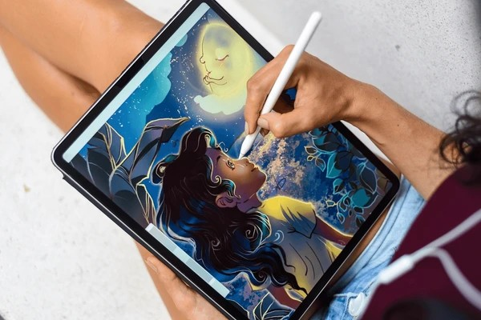

Welcome to the Art of Sketching
Home
Pencil Sketching
Charcoal Sketching
Pen & Ink Sketching
Digital Sketching
Gesture Sketching
Contact us
Digital Sketching
Overview: Digital sketching uses tablets and digital tools to create sketches with a wide range of brushes and effects. It’s popular among modern artists for its convenience and versatility.
Tools:
Drawing tablets (Wacom, iPad, etc.)
Digital pens
Sketching software (Procreate, Adobe Photoshop, etc.)
Techniques:
Layering: Use layers for sketching, shading, and coloring.
Brush Customization: Experiment with different brushes for unique textures.
Undo/Redo: Take advantage of digital tools to refine your work.
Applications:
Concept art
Illustrations
Animation
Tips:
Invest in a high-quality drawing tablet for better results.
Learn shortcuts in sketching software to speed up your workflow.
